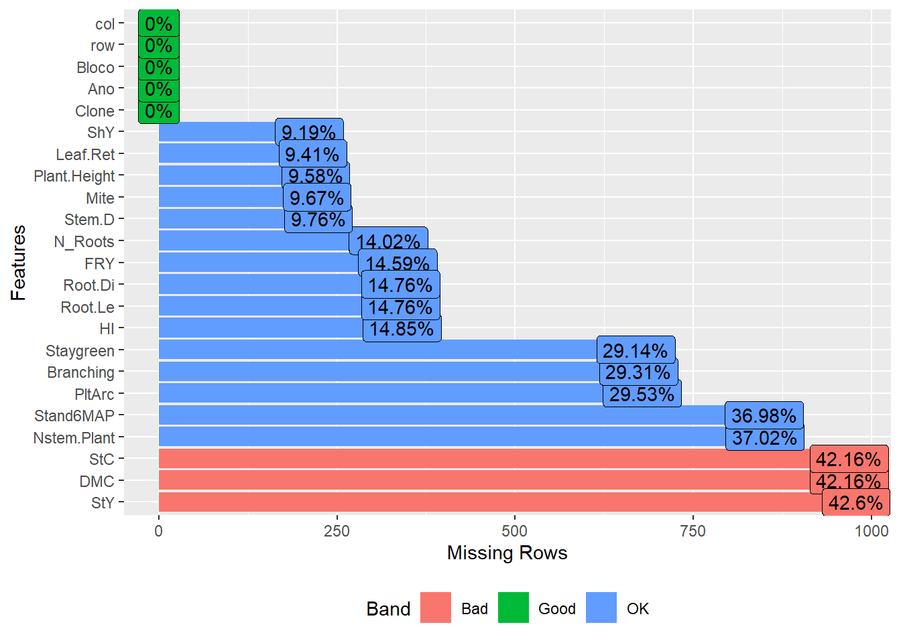

Last updated: 2022-11-11
Checks: 6 1
Knit directory:
Genomic-Selection-for-Drought-Tolerance-Using-Genome-Wide-SNPs-in-Casava/
This reproducible R Markdown analysis was created with workflowr (version 1.7.0). The Checks tab describes the reproducibility checks that were applied when the results were created. The Past versions tab lists the development history.
The R Markdown file has unstaged changes. To know which version of
the R Markdown file created these results, you’ll want to first commit
it to the Git repo. If you’re still working on the analysis, you can
ignore this warning. When you’re finished, you can run
wflow_publish to commit the R Markdown file and build the
HTML.
Great job! The global environment was empty. Objects defined in the global environment can affect the analysis in your R Markdown file in unknown ways. For reproduciblity it’s best to always run the code in an empty environment.
The command set.seed(20221020) was run prior to running
the code in the R Markdown file. Setting a seed ensures that any results
that rely on randomness, e.g. subsampling or permutations, are
reproducible.
Great job! Recording the operating system, R version, and package versions is critical for reproducibility.
Nice! There were no cached chunks for this analysis, so you can be confident that you successfully produced the results during this run.
Great job! Using relative paths to the files within your workflowr project makes it easier to run your code on other machines.
Great! You are using Git for version control. Tracking code development and connecting the code version to the results is critical for reproducibility.
The results in this page were generated with repository version d9cf408. See the Past versions tab to see a history of the changes made to the R Markdown and HTML files.
Note that you need to be careful to ensure that all relevant files for
the analysis have been committed to Git prior to generating the results
(you can use wflow_publish or
wflow_git_commit). workflowr only checks the R Markdown
file, but you know if there are other scripts or data files that it
depends on. Below is the status of the Git repository when the results
were generated:
Ignored files:
Ignored: .Rproj.user/
Ignored: data/allchrAR08.txt
Unstaged changes:
Modified: analysis/index.Rmd
Modified: analysis/phenotype.Rmd
Note that any generated files, e.g. HTML, png, CSS, etc., are not included in this status report because it is ok for generated content to have uncommitted changes.
These are the previous versions of the repository in which changes were
made to the R Markdown (analysis/phenotype.Rmd) and HTML
(docs/phenotype.html) files. If you’ve configured a remote
Git repository (see ?wflow_git_remote), click on the
hyperlinks in the table below to view the files as they were in that
past version.
| File | Version | Author | Date | Message |
|---|---|---|---|---|
| Rmd | bf7b1d3 | WevertonGomesCosta | 2022-11-11 | Update |
| html | bf7b1d3 | WevertonGomesCosta | 2022-11-11 | Update |
Data and libraries
Load Libraries
library(kableExtra)
library(tidyverse)
require(ComplexHeatmap)
library(data.table)
library(readxl)
library(metan)
library(DataExplorer)
library(doParallel)
theme_set(theme_bw())Data import and manipulation
Let’s import the phenotypic dataset, excluding the variables without information and the variables Local (redundant with Year) and Treatment (only one observation).
pheno <- read_excel("data/Phenotyping.xlsx",
na = "NA") %>%
select_if( ~ !all(is.na(.))) %>% # Deleting traits without information
select(-c("Local", "Tratamento"))We will perform some manipulations to adjust our database and to facilitate the visualization of the exploratory analysis.
First, let’s convert the variables that are character into factors. Then we will convert the variables that refer to the grades to integers and then into factors. After that, let’s create the variable ANo.Bloco for nesting in the model to obtain the BLUPs.
pheno <- pheno %>%
mutate_if(is.character, as.factor) %>%
mutate_at(c("RF", "Ácaro", "Vigor", "Branching_Level"), as.integer) %>%
mutate_if(is.integer, as.factor) %>%
mutate_at(
c(
"Ano",
"Bloco",
"Porte",
"Incidence_Mites",
"Stand_Final",
"Staygreen",
"Flowering"
),
as.factor
) %>% # Convert Ano and Bloco, and traits in factors
mutate(Ano.Bloco = factor(interaction(Ano, Bloco))) # Convert Ano.Bloco interaction in factorsExploratory Data Analysis
Introductory analysis of the entire dataset
introduce(pheno) %>%
kbl(escape = F, align = 'c') %>%
kable_classic(
"hover",
full_width = F,
position = "center",
fixed_thead = T
)| rows | columns | discrete_columns | continuous_columns | all_missing_columns | total_missing_values | complete_rows | total_observations | memory_usage |
|---|---|---|---|---|---|---|---|---|
| 2336 | 28 | 13 | 15 | 0 | 16771 | 440 | 65408 | 449920 |
We don’t have any columns that have all of the missing observations, but we do have a lot of missing values in every dataset. Some manipulations should be performed to improve the quality of the data.
Year Analysis
Let’s produce a heatmap to check the clone amount each year. I’m going to create another dataset with the Year and Clone count. Then I will create the objects corresponding to the clones and years array. Finally, I created the matrix that represents the presence and absence of the clone in the year.
pheno2 <- pheno %>%
count(Ano, Clone)
genmat <- model.matrix(~ -1 + Clone, data = pheno2)
envmat <- model.matrix(~ -1 + Ano, data = pheno2)
genenvmat <- t(envmat) %*% genmat
genenvmat_ch <- ifelse(genenvmat == 1, "Present", "Abscent")
Heatmap(
genenvmat_ch,
col = c("white", "tomato"),
show_column_names = F,
heatmap_legend_param = list(title = ""),
column_title = "Genotypes",
row_title = "Environments"
)
From the heatmap, it is clear that the year 2016 has very few observations. So, we must eliminate it.
pheno <- pheno %>%
filter(Ano != 2016) %>%
droplevels()Just for reference, let’s re-view the clone heatmap by year.
pheno2<- pheno %>%
count(Ano, Clone)
genmat = model.matrix( ~ -1 + Clone, data = pheno2)
envmat = model.matrix( ~ -1 + Ano, data = pheno2)
genenvmat = t(envmat) %*% genmat
genenvmat_ch = ifelse(genenvmat == 1, "Present", "Abscent")
Heatmap(
genenvmat_ch,
col = c("white", "tomato"),
show_column_names = F,
heatmap_legend_param = list(title = ""),
column_title = "Genotypes",
row_title = "Environments"
)
Here, it is possible to observe that our dataset has clones that were evaluated in just one year. Let’s visualize this, to see how many clones were evaluated according to the number of years.
pheno2 %>%
count(Clone) %>%
count(n) %>%
kbl(
escape = F,
align = 'c',
col.names = c("N of Environments", "Number of genotypes")
) %>%
kable_classic(
"hover",
full_width = F,
position = "center",
fixed_thead = T
)Storing counts in `nn`, as `n` already present in input
i Use `name = "new_name"` to pick a new name.| N of Environments | Number of genotypes |
|---|---|
| 1 | 350 |
| 2 | 72 |
| 3 | 20 |
| 4 | 5 |
Only 5 clones were evaluated in all years, this will possibly decrease our model accuracy.
Also, note that the years differ in the number of clones evaluated:
pheno2 %>%
group_by(Ano) %>%
summarise(length(Clone)) %>%
kbl(
escape = F,
align = 'c',
col.names = c("Environments", "Number of genotypes")) %>%
kable_classic(
"hover",
full_width = F,
position = "center",
fixed_thead = T
)| Environments | Number of genotypes |
|---|---|
| 2017 | 165 |
| 2018 | 138 |
| 2019 | 133 |
| 2020 | 138 |
Another factor that reduces the accuracy, and therefore adopting mixed models in the analysis is the most suitable for obtaining BLUPs.
We can check how many clones we have in common between the years:
genenvmat %*% t(genenvmat) %>%
kbl(escape = F, align = 'c') %>%
kable_classic(
"hover",
full_width = F,
position = "center",
fixed_thead = T
)| Ano2017 | Ano2018 | Ano2019 | Ano2020 | |
|---|---|---|---|---|
| Ano2017 | 165 | 42 | 22 | 14 |
| Ano2018 | 42 | 138 | 39 | 16 |
| Ano2019 | 22 | 39 | 133 | 29 |
| Ano2020 | 14 | 16 | 29 | 138 |
The year 2020 has a lower number of clones in common, however, we will keep it for the analysis.
Analysis of variables
Now, we will analyze the frequency for each discrete feature.
plot_bar(pheno)

Mite Incidence and Flowering have little information for some levels and many NA’s, we will also exclude these variables.
pheno <- pheno %>%
select(-c(Incidence_Mites, Flowering))
plot_bar(pheno)
Let’s just look at the missing values now, to check the proportions.
plot_missing(pheno)We have a high missing value ratio for Vigor, Leaf_Lenght, Canopy_Width and Canopy_Lenght, I’ll exclude those too.
pheno <- pheno %>%
select(-c(Vigor, Leaf_Lenght, Canopy_Width, Canopy_Lenght))Let’s check the distribution of characteristics by year now.
plot_bar(pheno, by = "Ano")
For Porte, Branching_Level and Staygreen we have many missing values for the year 2017, possibly there was no evaluation in that year for these characteristics. To get the BLUPs we will have to remove that Year from the database.
Now let’s look at the histograms of the quantitative variables:
plot_histogram(pheno)
We saw here that the quantitative variables present correlations with each other, mainly between PROD.AMD with PTR and AMD with MS
Let’s evaluate the descriptive statistics of the combination between clone and year for the variables.
ge_details(pheno, Ano, Clone, resp = everything()) %>% kbl(escape = F, align = 'c') %>%
kable_classic(
"hover",
full_width = F,
position = "center",
fixed_thead = T
)| Parameters | NR.P | PTR | PPA | MS | PROD.AMD | AP | HI | AMD | CR | DR | DCaule | Nº Hastes |
|---|---|---|---|---|---|---|---|---|---|---|---|---|
| Mean | 4.28 | 4.88 | 14.2 | 28.97 | 1.51 | 1.19 | 24.23 | 24.42 | 23.17 | 28.82 | 2.11 | 2.13 |
| SE | 0.06 | 0.09 | 0.22 | 0.17 | 0.04 | 0.01 | 0.27 | 0.17 | 0.13 | 0.18 | 0.01 | 0.03 |
| SD | 2.52 | 4.06 | 10.17 | 6.29 | 1.27 | 0.33 | 12.13 | 6.11 | 5.89 | 7.99 | 0.38 | 0.95 |
| CV | 58.9 | 83.19 | 71.66 | 21.73 | 84.4 | 27.81 | 50.08 | 25.05 | 25.42 | 27.75 | 17.9 | 44.53 |
| Min | 0 (BGM-0019 in 2019) | 0 (BGM-0019 in 2019) | 0 (BGM-0044 in 2018) | 0 (BGM-0044 in 2018) | 0 (BGM-0044 in 2018) | 0 (BGM-0044 in 2018) | 0 (BGM-0019 in 2019) | 7.33 (BGM-0626 in 2020) | 0 (BGM-0044 in 2018) | 0 (BGM-0044 in 2018) | 1.01 (BGM-0592 in 2018) | 1 (BGM-0036 in 2018) |
| Max | 15.67 (2012-107-002 in 2019) | 22.2 (BGM-1267 in 2018) | 61.17 (BGM-2124 in 2020) | 48.34 (BGM-1015 in 2020) | 8.87 (BGM-0396 in 2018) | 3.03 (BR-11-24-156 in 2020) | 71.97 (BGM-1315 in 2018) | 43.69 (BGM-1015 in 2020) | 47.33 (BGM-0396 in 2018) | 63.3 (BRS Mulatinha in 2018) | 4.37 (BRS Tapioqueira in 2020) | 6.67 (BGM-0714 in 2019) |
| MinENV | 2018 (1.6) | 2017 (2.75) | 2017 (8.47) | 2020 (26.21) | 2019 (1.32) | 2017 (1) | 2020 (18.61) | 2020 (21.56) | 2017 (19.72) | 2017 (24.49) | 2018 (2.02) | 2018 (1.44) |
| MaxENV | 2019 (5.74) | 2020 (6.52) | 2020 (25.87) | 2018 (34.91) | 2018 (1.81) | 2019 (1.48) | 2018 (31.84) | 2018 (30.78) | 2019 (27.14) | 2018 (34.28) | 2017 (2.16) | 2019 (2.71) |
| MinGEN | BGM-0044 (0) | BGM-0044 (0) | BGM-0044 (0) | BGM-0044 (0) | BGM-0044 (0) | BGM-0044 (0) | BGM-0044 (0) | BGM-0626 (10.33) | BGM-0044 (0) | BGM-0044 (0) | BGM-0048 (1.25) | BGM-0066 (1) |
| MaxGEN | 2012-107-002 (11.33) | IAC-14 (14.07) | BGM-2124 (54.33) | BGM-1015 (45.02) | BGM-1023 (4.76) | BGM-1200 (1.91) | Mata_Fome_Branca (52.78) | BGM-1015 (40.37) | BGM-1956 (35.5) | BGM-1956 (48.91) | BGM-1523 (2.93) | BGM-0451 (4.44) |
The BGM-0044 genotype showed null values for most traits, as it was only evaluated in the year 2018, it is better to exclude it.
pheno<- pheno %>%
filter(Clone != "BGM-0044")%>%
droplevels()Apparently we no longer have a genotype that could harm our analysis. Now we must evaluate the clone-only descriptive statistics for the variables.
desc_stat(pheno, by = Ano) %>%
kbl(escape = F, align = 'c') %>%
kable_classic(
"hover",
full_width = F,
position = "center",
fixed_thead = T
)| Ano | variable | cv | max | mean | median | min | sd.amo | se | ci.t | n.valid |
|---|---|---|---|---|---|---|---|---|---|---|
| 2017 | AMD | NA | -Inf | NaN | NA | Inf | 0.0000 | NA | NaN | 0 |
| 2017 | AP | 21.0398 | 1.6767 | 1.0023 | 1.0000 | 0.4500 | 0.2109 | 0.0084 | 0.0165 | 632 |
| 2017 | CR | 21.5823 | 31.6667 | 19.7236 | 19.6667 | 7.0000 | 4.2568 | 0.1719 | 0.3376 | 613 |
| 2017 | DCaule | 16.7774 | 3.3333 | 2.1581 | 2.1667 | 1.2000 | 0.3621 | 0.0144 | 0.0284 | 629 |
| 2017 | DR | 21.0039 | 39.6900 | 24.4889 | 24.4733 | 8.9867 | 5.1436 | 0.2077 | 0.4080 | 613 |
| 2017 | HI | 48.2942 | 66.6827 | 23.5691 | 22.7255 | 1.5744 | 11.3825 | 0.4612 | 0.9058 | 609 |
| 2017 | MS | NA | -Inf | NaN | NA | Inf | 0.0000 | NA | NaN | 0 |
| 2017 | Nº Hastes | NA | -Inf | NaN | NA | Inf | 0.0000 | NA | NaN | 0 |
| 2017 | NR.P | 48.8708 | 12.0000 | 4.3530 | 4.3330 | 0.1250 | 2.1273 | 0.0860 | 0.1689 | 612 |
| 2017 | PPA | 45.4973 | 22.2220 | 8.4677 | 8.0750 | 0.6940 | 3.8526 | 0.1542 | 0.3029 | 624 |
| 2017 | PROD.AMD | NA | -Inf | NaN | NA | Inf | 0.0000 | NA | NaN | 0 |
| 2017 | PTR | 66.8379 | 9.6700 | 2.7517 | 2.4310 | 0.1160 | 1.8392 | 0.0743 | 0.1459 | 613 |
| 2018 | AMD | 15.6937 | 41.4284 | 30.7820 | 31.3500 | 13.5318 | 4.8309 | 0.2794 | 0.5498 | 299 |
| 2018 | AP | 28.0409 | 1.9967 | 1.0953 | 1.0600 | 0.4867 | 0.3071 | 0.0159 | 0.0313 | 373 |
| 2018 | CR | 27.1625 | 47.3333 | 23.6102 | 23.0000 | 9.5000 | 6.4131 | 0.3715 | 0.7311 | 298 |
| 2018 | DCaule | 22.3814 | 3.7317 | 2.0189 | 1.9800 | 1.0133 | 0.4519 | 0.0235 | 0.0463 | 369 |
| 2018 | DR | 23.3943 | 63.3033 | 34.7356 | 34.4400 | 14.1300 | 8.1262 | 0.4707 | 0.9264 | 298 |
| 2018 | HI | 42.0024 | 71.9673 | 32.2503 | 32.6091 | 0.0000 | 13.5459 | 0.7719 | 1.5188 | 308 |
| 2018 | MS | 13.6086 | 46.0784 | 35.3819 | 36.0000 | 18.1818 | 4.8150 | 0.2785 | 0.5480 | 299 |
| 2018 | Nº Hastes | 33.4885 | 3.3333 | 1.4379 | 1.3333 | 1.0000 | 0.4815 | 0.0249 | 0.0490 | 373 |
| 2018 | NR.P | 63.2913 | 6.2500 | 1.6249 | 1.4085 | 0.1900 | 1.0284 | 0.0588 | 0.1157 | 306 |
| 2018 | PPA | 69.0625 | 31.6000 | 8.7610 | 7.2000 | 1.0000 | 6.0506 | 0.3022 | 0.5940 | 401 |
| 2018 | PROD.AMD | 91.8742 | 8.8669 | 1.8356 | 1.3539 | 0.0839 | 1.6864 | 0.0984 | 0.1936 | 294 |
| 2018 | PTR | 86.6619 | 22.2000 | 5.6274 | 4.2500 | 0.0000 | 4.8768 | 0.2770 | 0.5450 | 310 |
| 2019 | AMD | 16.5407 | 35.9441 | 23.6326 | 23.6328 | 10.7346 | 3.9090 | 0.1745 | 0.3428 | 502 |
| 2019 | AP | 19.1125 | 2.4233 | 1.4843 | 1.4633 | 0.7400 | 0.2837 | 0.0123 | 0.0243 | 528 |
| 2019 | CR | 21.1089 | 45.6667 | 27.1361 | 27.0000 | 11.0000 | 5.7281 | 0.2529 | 0.4969 | 513 |
| 2019 | DCaule | 15.7037 | 3.3203 | 2.1061 | 2.0963 | 1.1197 | 0.3307 | 0.0144 | 0.0283 | 528 |
| 2019 | DR | 24.3155 | 58.9267 | 33.4940 | 33.6500 | 6.1200 | 8.1442 | 0.3596 | 0.7064 | 513 |
| 2019 | HI | 47.3227 | 60.1626 | 26.1706 | 26.6117 | 0.0000 | 12.3846 | 0.5390 | 1.0588 | 528 |
| 2019 | MS | 13.8212 | 40.5941 | 28.2826 | 28.2828 | 15.3846 | 3.9090 | 0.1745 | 0.3428 | 502 |
| 2019 | Nº Hastes | 37.3740 | 6.6667 | 2.7113 | 2.6667 | 1.0000 | 1.0133 | 0.0441 | 0.0867 | 527 |
| 2019 | NR.P | 47.7261 | 15.6670 | 5.7402 | 5.6670 | 0.0000 | 2.7396 | 0.1192 | 0.2342 | 528 |
| 2019 | PPA | 47.4901 | 47.5710 | 13.4607 | 12.7735 | 1.2860 | 6.3925 | 0.2782 | 0.5465 | 528 |
| 2019 | PROD.AMD | 72.5347 | 5.4021 | 1.3211 | 1.1082 | 0.0000 | 0.9583 | 0.0428 | 0.0841 | 501 |
| 2019 | PTR | 74.3122 | 22.2000 | 5.2850 | 4.5000 | 0.0000 | 3.9274 | 0.1709 | 0.3358 | 528 |
| 2020 | AMD | 27.3600 | 43.6860 | 21.5594 | 21.3900 | 7.3260 | 5.8986 | 0.2569 | 0.5048 | 527 |
| 2020 | AP | 24.0927 | 3.0333 | 1.1945 | 1.1600 | 0.3600 | 0.2878 | 0.0124 | 0.0243 | 543 |
| 2020 | CR | 18.9730 | 36.6667 | 23.2345 | 23.3333 | 9.0000 | 4.4083 | 0.1909 | 0.3751 | 533 |
| 2020 | DCaule | 17.5042 | 4.3733 | 2.1321 | 2.1207 | 1.0547 | 0.3732 | 0.0160 | 0.0315 | 543 |
| 2020 | DR | 20.5858 | 43.2733 | 26.2101 | 26.1800 | 11.8533 | 5.3956 | 0.2337 | 0.4591 | 533 |
| 2020 | HI | 43.3204 | 45.9340 | 18.6129 | 18.0486 | 1.9608 | 8.0632 | 0.3496 | 0.6867 | 532 |
| 2020 | MS | 22.5059 | 48.3360 | 26.2094 | 26.0400 | 11.9760 | 5.8986 | 0.2569 | 0.5048 | 527 |
| 2020 | Nº Hastes | 37.1507 | 4.6667 | 2.0463 | 2.0000 | 1.0000 | 0.7602 | 0.0326 | 0.0641 | 543 |
| 2020 | NR.P | 47.0839 | 10.3330 | 4.3060 | 4.3330 | 0.3330 | 2.0274 | 0.0881 | 0.1730 | 530 |
| 2020 | PPA | 42.7475 | 61.1670 | 25.8653 | 25.9165 | 3.3330 | 11.0568 | 0.4794 | 0.9417 | 532 |
| 2020 | PROD.AMD | 81.2220 | 6.0724 | 1.5211 | 1.2326 | 0.0483 | 1.2354 | 0.0540 | 0.1060 | 524 |
| 2020 | PTR | 68.4455 | 20.5670 | 6.5246 | 5.9000 | 0.4000 | 4.4658 | 0.1934 | 0.3800 | 533 |
Again, some variables were not computed for the year 2017, so we have to eliminate that year when performing the analysis for these variables.
What draws attention in this table are the high cv for some characteristics, especially: HI, Nº of Stems, NR.P, PPA, PROD.AMD and PTR.
This may be due to the presence of outliers, let’s inspect the entire dataset to assess whether there are outliers:
inspect(pheno %>%
select(-c(Clone)), verbose = FALSE) %>% kbl(escape = F, align = 'c') %>%
kable_classic(
"hover",
full_width = F,
position = "center",
fixed_thead = T
)| Variable | Class | Missing | Levels | Valid_n | Min | Median | Max | Outlier | Text |
|---|---|---|---|---|---|---|---|---|---|
| Ano | factor | No | 4 | 2292 | NA | NA | NA | NA | NA |
| Bloco | factor | No | 4 | 2292 | NA | NA | NA | NA | NA |
| NR.P | numeric | Yes |
|
1976 | 0.00 | 4.00 | 15.67 | 16 | NA |
| PTR | numeric | Yes |
|
1984 | 0.00 | 3.70 | 22.20 | 76 | NA |
| PPA | numeric | Yes |
|
2085 | 0.69 | 11.17 | 61.17 | 89 | NA |
| MS | numeric | Yes |
|
1328 | 11.98 | 28.80 | 48.34 | 6 | NA |
| PROD.AMD | numeric | Yes |
|
1319 | 0.00 | 1.21 | 8.87 | 49 | NA |
| AP | numeric | Yes |
|
2076 | 0.36 | 1.16 | 3.03 | 23 | NA |
| HI | numeric | Yes |
|
1977 | 0.00 | 23.21 | 71.97 | 14 | NA |
| AMD | numeric | Yes |
|
1328 | 7.33 | 24.15 | 43.69 | 6 | NA |
| Porte | factor | Yes | 5 | 1618 | NA | NA | NA | NA | NA |
| RF | factor | Yes | 6 | 2080 | NA | NA | NA | NA | NA |
| CR | numeric | Yes |
|
1957 | 7.00 | 23.00 | 47.33 | 19 | NA |
| DR | numeric | Yes |
|
1957 | 6.12 | 28.17 | 63.30 | 32 | NA |
| DCaule | numeric | Yes |
|
2069 | 1.01 | 2.10 | 4.37 | 22 | NA |
| Ácaro | factor | Yes | 5 | 2074 | NA | NA | NA | NA | NA |
| Nº Hastes | numeric | Yes |
|
1443 | 1.00 | 2.00 | 6.67 | 30 | NA |
| Stand_Final | factor | Yes | 8 | 1444 | NA | NA | NA | NA | NA |
| Branching_Level | factor | Yes | 5 | 1619 | NA | NA | NA | NA | NA |
| Staygreen | factor | Yes | 3 | 1623 | NA | NA | NA | NA | NA |
| Ano.Bloco | factor | No | 16 | 2292 | NA | NA | NA | NA | NA |
Confirming what was described before, most variables with high cv have many outliers and therefore we will exclude them in the loop to obtain the blups.
General Inspection
Now let’s just perform a general inspection of the data to finish the manipulations.
corr_plot(pheno, col.by = Ano)
Starch with MS and PROD.AMD with PTR show high correlation.
Furthermore most of the variables apparently show normal distribution of phenotypic data. So let’s move on to getting the blups.
Genotype-environment analysis by mixed-effect models
First, I’m going to create a function to get the blups and some parameters from our model.
BLUPS_par <- function(model, trait) {
BLUP <- ranef(model, condVar = TRUE)$Clone
PEV <-
c(attr(BLUP, "postVar")) # PEV is a vector of error variances associated with each individual BLUP... # it tells you about how confident you should be in the estimate of an individual CLONE's BLUP value.
Clone.var <-
c(VarCorr(model)$Clone) # Extract the variance component for CLONE
ResidVar <-
(attr(VarCorr(model), "sc")) ^ 2 # Extract the residual variance component
Ano <-
c(VarCorr(model)$Ano) # Extract the variance component for Ano.Bloco
Ano.Bloco <-
c(VarCorr(model)$Ano.Bloco) # Extract the variance component for Ano.Bloco
# You will need a line like the one above for every random effect (not for fixed effects)
out <-
BLUP / (1 - (PEV / Clone.var)) # This is the actual de-regress part (the BLUP for CLONE is divided by (1 - PEV/CLONE.var))
r2 <-
1 - (PEV / Clone.var) # Reliability: a confidence value for a BLUP (0 to 1 scale)
H2 = Clone.var / (Clone.var + Ano.Bloco + ResidVar) # An estimate of the broad-sense heritability, must change this formula when you change the model analysis
wt = (1 - H2) / ((0.1 + (1 - r2) / r2) * H2) # Weights for each de-regressed BLUP
# There is a paper the determined this crazy formula, Garrick et al. 2009. I wouldn't pay much attn. to it.
# These weights will be used in the second-step (e.g. cross-validation) to account for what we've done in this step
# The weights will be fit as error variances associated with each residual value
VarComps <- as.data.frame(VarCorr(model))
return(
list(
Trait = trait,
drgBLUP = out,
BLUP = BLUP,
weights = wt,
varcomps = VarComps,
H2 = H2,
Reliability = r2,
model = model
)
)
}
save(BLUPS_par, file = "output/BLUPS_par.Rdata")The BLUP model
Here we have to remember that we have outliers for some characteristics and also that we must exclude the year 2017 for some.
I’m going to create a loop where I inform which characteristics where this year should be excluded and also use the function to remove outliers.
The characteristics that we must exclude in the year 2017 are Porte, Branching_Level, Staygreen, AMD, MS, Nº Rods and PROD.AMD.
excluir_2017 <- c("Porte", "Branching_Level", "Staygreen", "AMD", "MS", "Nº Hastes" , "PROD.AMD")We will use this vector inside the loop to exclude the year 2017 for these variables.
Let’s convert all variables to numeric now.
traits <- colnames(pheno)[4:21]
pheno<- pheno %>%
mutate_at(traits, as.numeric)Now let’s perform the mixed model analysis to get the BLUPs.
load("output/BLUPS_par.Rdata")
registerDoParallel(cores = 6) # Specify the number of cores (my lab computer has 8; I will use 6 of them)
resultMM <- foreach(a = traits, i = icount(), .inorder = TRUE) %dopar% {
require(lme4)
require(dplyr)
library(purrr)
# Loop to exclude the year 2017 according to the vector with the variable names described above.
if (a %in% excluir_2017) {
data <- pheno %>%
filter(Ano != 2017) %>%
droplevels()
} else{
data <- pheno
}
# Deletion of the outliers found
outliers <- boxplot(data[i+3], plot = FALSE)$out
if(!is_empty(outliers)){
data <- filter(data,data[i+3] != outliers)
}
model <- lmer(data = data,
formula = get(traits[i]) ~ (1 |Clone) + Ano + (1|Ano.Bloco)) # Clone and Ano.Bloco are random and Ano is fixed
result <- BLUPS_par(model, traits[i])
}
save(resultMM, file = "output/resultMM.Rdata")BLUPS for Clone
As I used “foreach” to run each stage 1 analysis in parallel, each characteristic is in a separate element of a list We need to process the resultMM object into a data.frame or matrix for further analysis.
load("output/resultMM.Rdata")
BLUPS <-
data.frame(Clone = unique(pheno$Clone), stringsAsFactors = F)
H2 <- data.frame(H2 = "H2",
stringsAsFactors = F)
varcomp <-
data.frame(
grp = c("Clone", "Ano", "Ano.Bloco", "Residual"),
stringsAsFactors = F
)
# Here we will get the BLUPS for each clone
for (i in 1:length(resultMM)) {
data <-
data.frame(Clone = rownames(resultMM[[i]]$BLUP),
stringsAsFactors = F)
data[, resultMM[[i]]$Trait] <- resultMM[[i]]$BLUP
BLUPS <- merge(BLUPS, data, by = "Clone", all.x = T)
H2[, resultMM[[i]]$Trait] <- resultMM[[i]]$H2
colnames(resultMM[[i]]$varcomps) <-
c(
"grp",
"var1",
"var2",
paste("vcov", resultMM[[i]]$Trait, sep = "."),
paste("sdcor", resultMM[[i]]$Trait, sep = ".")
)
varcomp <- varcomp %>%
right_join(resultMM[[i]]$varcomps)
}Joining, by = "grp"
Joining, by = c("grp", "var1", "var2")
Joining, by = c("grp", "var1", "var2")
Joining, by = c("grp", "var1", "var2")
Joining, by = c("grp", "var1", "var2")
Joining, by = c("grp", "var1", "var2")
Joining, by = c("grp", "var1", "var2")
Joining, by = c("grp", "var1", "var2")
Joining, by = c("grp", "var1", "var2")
Joining, by = c("grp", "var1", "var2")
Joining, by = c("grp", "var1", "var2")
Joining, by = c("grp", "var1", "var2")
Joining, by = c("grp", "var1", "var2")
Joining, by = c("grp", "var1", "var2")
Joining, by = c("grp", "var1", "var2")
Joining, by = c("grp", "var1", "var2")
Joining, by = c("grp", "var1", "var2")
Joining, by = c("grp", "var1", "var2")rownames(BLUPS) <- BLUPS$CloneSaving the results of BLUPs and parameters
saveRDS(BLUPS, file = "output/BLUPS.RDS")
write.csv(BLUPS,
"output/BLUPS.csv",
row.names = F,
quote = F)
write.csv(H2,
"output/herdabilidade.csv",
row.names = F,
quote = F)Ploting BLUPS for all traits
First, I will add the average of the variables with the BLUPs for better interpretation.
BLUPS<-readRDS("output/BLUPS.RDS")
media_pheno <- as.data.frame(pheno %>%
summarise_if(is.numeric, mean, na.rm = TRUE))
write.table(media_pheno, "output/media_pheno.csv")
phen<-
data.frame(Clone = unique(pheno$Clone), stringsAsFactors = F)
for (i in traits) {
phen[i] <- BLUPS[i] + media_pheno[, i]
}Let’s plot the boxplots of the variables.
phen %>%
pivot_longer(2:19, names_to = "Variable", values_to = "Values") %>%
ggplot() +
geom_boxplot(aes(y = Values, fill = Variable), show.legend = FALSE) +
facet_wrap(. ~ Variable, ncol = 6, scales = "free") +
expand_limits(y = 0) +
theme_bw()
Here we will only evaluate the distribution of BLUPs without the mean.
BLUPS %>%
pivot_longer(2:19, names_to = "Variable", values_to = "Values") %>%
ggplot() +
geom_density(aes(x = Values), show.legend = FALSE) +
facet_wrap(. ~ Variable, ncol = 6, scales = "free") +
expand_limits(y = 0) +
theme_bw()
Apparently most BLUPs for the variables follow normal distribution and can be applied to GWS by conventional methods.
sessionInfo()R version 4.1.3 (2022-03-10)
Platform: x86_64-w64-mingw32/x64 (64-bit)
Running under: Windows 10 x64 (build 19042)
Matrix products: default
locale:
[1] LC_COLLATE=Portuguese_Brazil.1252 LC_CTYPE=Portuguese_Brazil.1252
[3] LC_MONETARY=Portuguese_Brazil.1252 LC_NUMERIC=C
[5] LC_TIME=Portuguese_Brazil.1252
attached base packages:
[1] parallel grid stats graphics grDevices utils datasets
[8] methods base
other attached packages:
[1] doParallel_1.0.17 iterators_1.0.14 foreach_1.5.2
[4] DataExplorer_0.8.2 metan_1.17.0 readxl_1.4.1
[7] data.table_1.14.2 ComplexHeatmap_2.10.0 forcats_0.5.2
[10] stringr_1.4.1 dplyr_1.0.10 purrr_0.3.4
[13] readr_2.1.2 tidyr_1.2.1 tibble_3.1.8
[16] ggplot2_3.3.6 tidyverse_1.3.2 kableExtra_1.3.4
loaded via a namespace (and not attached):
[1] minqa_1.2.4 googledrive_2.0.0 colorspace_2.0-3
[4] rjson_0.2.21 ellipsis_0.3.2 rprojroot_2.0.3
[7] circlize_0.4.15 GlobalOptions_0.1.2 fs_1.5.2
[10] clue_0.3-61 rstudioapi_0.14 farver_2.1.1
[13] ggrepel_0.9.1 fansi_1.0.3 lubridate_1.8.0
[16] mathjaxr_1.6-0 xml2_1.3.3 splines_4.1.3
[19] codetools_0.2-18 cachem_1.0.6 knitr_1.40
[22] polyclip_1.10-0 jsonlite_1.8.0 nloptr_2.0.3
[25] workflowr_1.7.0 broom_1.0.1 cluster_2.1.2
[28] dbplyr_2.2.1 png_0.1-7 ggforce_0.4.1
[31] compiler_4.1.3 httr_1.4.4 backports_1.4.1
[34] Matrix_1.5-1 assertthat_0.2.1 fastmap_1.1.0
[37] gargle_1.2.1 cli_3.3.0 later_1.3.0
[40] tweenr_2.0.2 htmltools_0.5.3 tools_4.1.3
[43] igraph_1.3.5 lmerTest_3.1-3 gtable_0.3.1
[46] glue_1.6.2 Rcpp_1.0.9 cellranger_1.1.0
[49] jquerylib_0.1.4 vctrs_0.4.1 nlme_3.1-159
[52] svglite_2.1.0 xfun_0.32 networkD3_0.4
[55] lme4_1.1-30 rvest_1.0.3 lifecycle_1.0.3
[58] googlesheets4_1.0.1 MASS_7.3-58.1 scales_1.2.1
[61] hms_1.1.2 promises_1.2.0.1 RColorBrewer_1.1-3
[64] yaml_2.3.5 gridExtra_2.3 sass_0.4.2
[67] reshape_0.8.9 stringi_1.7.6 highr_0.9
[70] S4Vectors_0.32.4 BiocGenerics_0.40.0 boot_1.3-28
[73] shape_1.4.6 rlang_1.0.6 pkgconfig_2.0.3
[76] systemfonts_1.0.4 matrixStats_0.62.0 lattice_0.20-45
[79] evaluate_0.17 labeling_0.4.2 htmlwidgets_1.5.4
[82] patchwork_1.1.2 tidyselect_1.2.0 GGally_2.1.2
[85] plyr_1.8.7 magrittr_2.0.3 R6_2.5.1
[88] magick_2.7.3 IRanges_2.28.0 generics_0.1.3
[91] DBI_1.1.3 pillar_1.8.1 haven_2.5.1
[94] whisker_0.4 withr_2.5.0 modelr_0.1.9
[97] crayon_1.5.2 utf8_1.2.2 tzdb_0.3.0
[100] rmarkdown_2.17 GetoptLong_1.0.5 git2r_0.30.1
[103] reprex_2.0.2 digest_0.6.29 webshot_0.5.4
[106] numDeriv_2016.8-1.1 httpuv_1.6.5 stats4_4.1.3
[109] munsell_0.5.0 viridisLite_0.4.1 bslib_0.4.0 Weverton Gomes da Costa, Pós-Doutorando, Embrapa Mandioca e Fruticultura, wevertonufv@gmail.com↩︎